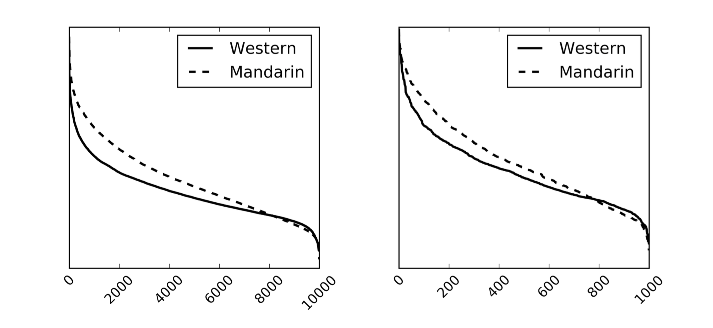
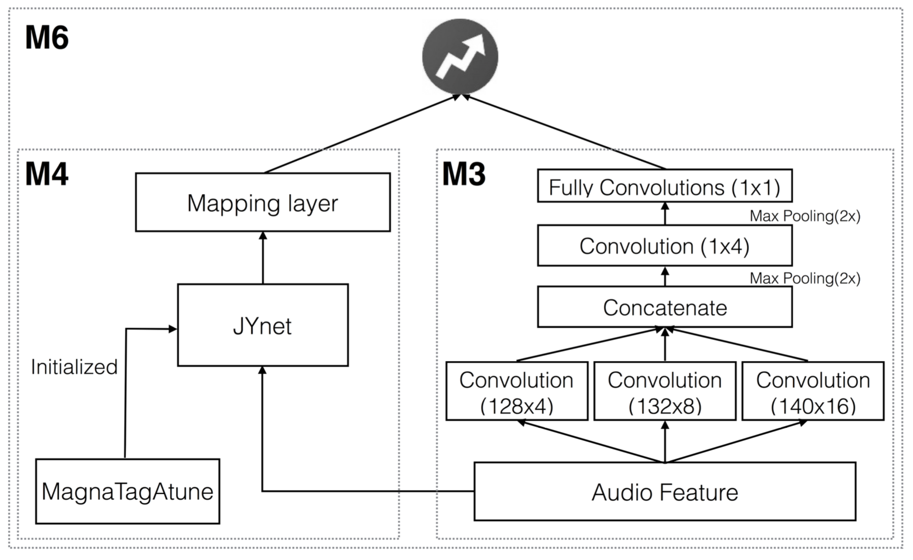

Being able to predict whether a song can be a hit has important applications in the music industry. Knowing such information could help the musician to evaluate their work before publication, or maybe assist the company to decide their commercial strategy.
The popularity of a song can be greatly affected by external factors such as social and commercial influences. To which degree audio features computed from musical signals can predict song popularity is an interesting research question on its own
The Power of Deep
In this work, we tackle the question of audio-based hit song prediction with both traditional machine learning methods and several more advanced deep learning model. Moreover, we use the Mandarin and Western datasets of KKBOX to evaluate the models, in which we found some interesting results.
Specifically, we experiment with a convolutional neural network model that takes the primitive mel-spectrogram as the input for feature learning, a more advanced JYnet model that uses an external song dataset for supervised pre-training and auto-tagging, and the combination of these two models.
We also consider the inception model to characterize audio information in different scales. Our experiments suggest that deep structures are indeed more accurate than shallow structures in predicting the popularity of either Chinese or Western Pop songs in Taiwan.
Dataset
Thanks to KKBOX Inc., we obtain a subset of user listening records contributed by Taiwanese listeners over a time horizon of one year, from Oct. 2012 to Sep. 2013, involving the playcounts of close to 30K users for around 125K songs.
The scale and the time span of the dataset are deemed appropriate for this study. Unlike previous work on musical trend analysis that may involve more than ten years’ worth of data, for the purpose of our work we want to avoid changes in public music tastes and therefore it is better to use listening records collected within a year. We define the hit score of a song according to the multiplication of its playcount in log scale and the number of users (also in log scale) who have listened to the song. We opt for not using the playcounts only to measure song popularity because it is possible that the playcount of a song is contributed by only a very small number of users.
To make our experimental results on the two subsets comparable, we sample the same amount of 10K songs in our experiment for both subsets. These songs are those with the highest playcounts within the subset.
Tech Time! The Methods
We formulate hit song prediction as a regression problem and train either shallow or deep neural network models for predicting the hit scores. Let's skip the details of the traditional methods(Linear Regression and CNN), and head straight to our main dish: inception CNN, and the hybrid joint training network.
The audio version of Inception CNN:
The idea of inception was introduced in GoogLeNet for visual problems. It uses multi-scale kernels to learn features. Since we use the mel-spectrograms directly as the input, which is a 128 by 646 matrix. We make an audio version of it by adding two more parallel early convolutional layers with different sizes: 132-by-8 and 140-by-16, as illustrated in (M3) of the structure figure below. To combine the output of these three kernels by concatenation, the input mel-spectrogram needs to be zero-padded.
The hybrid joint training network:
We also try to combine the deep models with JYnet(M4), an advanced auto-tagging system to exploit information in both the mel-spectrograms and tags, leading to (M6) in the structure figure below. Instead of simply combining the results of the two models, we add another layer on top of them for joint training. However, we only update the parameters of its LR part, as JYnet is treated as an external, pre-trained model in our implementation.
Boom! The results
In order to evaluate the performance of the experiments thoroughly, we apply four evaluation metrics includes recall, NDCG, and some ranking correlation coefficient. However, in this blog post, let me just give you a big picture of the model's capability by simply look into the recall.
Mandarin dataset recall@100:
Random guess: 0.10 Traditional Linear Regression: 0.19 Inception CNN: 0.25 Hybrid joint training: 0.30
What does it mean?
It means that given 1K randomly selected Mandarin songs in the dataset, if you ask our hybrid model to list out the top100 hits, it can get 30 correct prediction.
Li-Chia Yang, Szu-Yu Chou, Jen-Yu Liu, Yi-Hsuan Yang, Yi-An Chen, “Revisiting the problem of audio-based hit song prediction using convolutional neural networks”, Proc. 42nd International Conference on Acoustics, Speech and Signal Processing (ICASSP), New Orleans, USA, March. 2017, accepted.